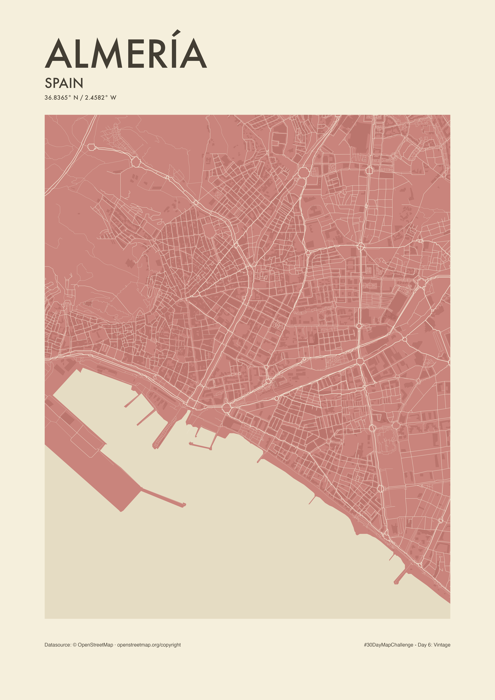

Almería in pastel red
A vintage-inspired portrait of Almería, Spain. Streets, building footprints and the geometry of the harbour trace the city beside the Mediterranean in pastel red and warm cream.


The idea
Let the urban fabric carry the composition: the irregular streets of the historic centre, the surrounding street grid and the strong outline of the port. A restrained palette and a geometric Futura title give the map the feel of a printed city portrait.
How it was made
Created in R with sf, ggplot2, grid and ragg. OpenStreetMap data was downloaded in small cached extracts, deduplicated, projected to ETRS89 / UTM zone 30N (EPSG:25830) and clipped to the chosen composition.
The coastline defines the land and harbour polygons. Road line widths follow a simple hierarchy. A small cartographic smoothing adjustment softens angular road segments and roundabouts while retaining their original connection nodes. Buildings use a darker, low-contrast shade of red.
Sources and limitations
Street, building and coastline data: © OpenStreetMap contributors, available under the Open Database License (ODbL). Downloaded on 30 October 2026.
This is contemporary cartography with vintage styling, not a reconstruction of historical Almería. The crop covers part of the city, not the entire municipality. OpenStreetMap coverage varies; this version uses closed building ways and may omit buildings represented only by relations. The smoothed lines are for display and should not be used for routing or surveying.